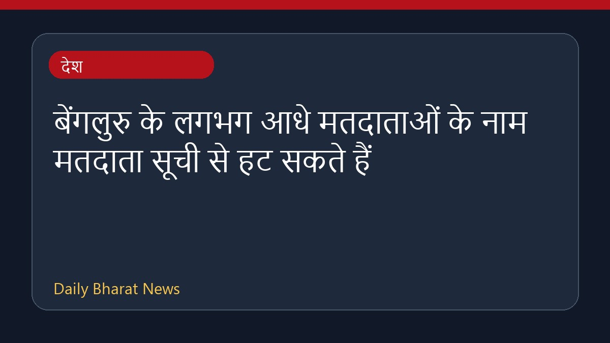

बेंगलुरु के लगभग आधे मतदाताओं के नाम मतदाता सूची से हट सकते हैं

कर्नाटक के बेंगलुरु में विशेष सारांश पुनरीक्षण के तहत लगभग आधे मतदाताओं के नाम मतदाता सूची से हटाए जाने की आशंका जताई जा रही है। मीडिया रिपोर्ट्स के अनुसार, मसौदा सूची से करीब 20 प्रतिशत मतदाताओं को बाहर किया जा सकता है और 34 लाख से अधिक लोगों को नोटिस मिलने की संभावना है। मतदाता अब ऑनलाइन यह जांच सकते हैं कि उनके नाम एएसडीडीओ श्रेणी में चिह्नित किए गए हैं या नहीं। इस प्रक्रिया को लेकर नागरिकों और प्रशासन के बीच सुधारात्मक कदम उठाए जा रहे हैं ताकि पात्र मतदाताओं के नाम सूची में बने रहें।
मूल स्रोत: India News Sources
Nearly Half Of Bengaluru's Voters Face Deletion From Voter Rolls In SIR - NDTV ↗
Nearly Half Of Bengaluru's Voters Face Deletion From Voter Rolls In SIR - NDTV ↗